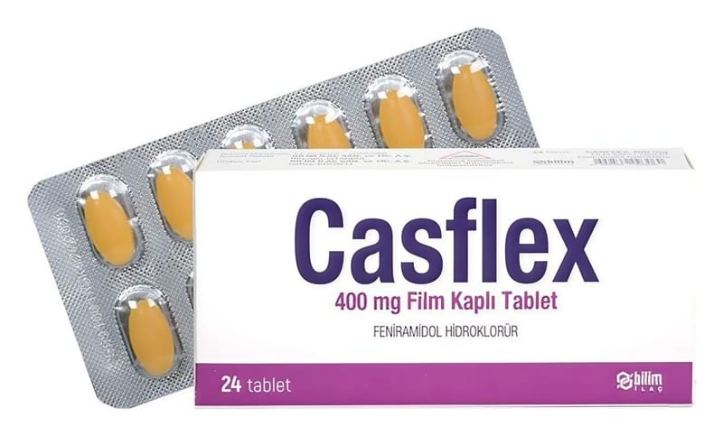

Casflex 400 mg Film Kaplı Tablet, 24 Adet

Ne için kullanılır
KT · Bölüm 1CASFLEX, kas gevşetici ve ağrı kesici olarak etki gösterir.
CASFLEX, karton kutuda, 24 tabletlik Al ve PVC/PVDC blister ambalajda, kullanma talimatı ile birlikte sunulmaktadır.
CASFLEX; kas-iskelet sistemi ile ilişkili, aniden başlayan ağrılı kas kasılmalarına bağlı belirtilerin azaltılması için kullanılır.
Kaslardaki gerginliği giderir, ağrıyı geçirir ve kramp halindeki iskelet kasının fonksiyonunu sağlar.